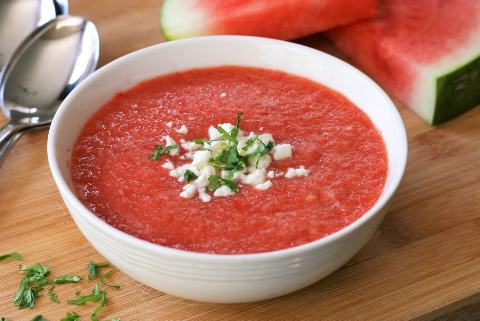

Summer Watermelon Gazpacho

This is perfect for a hot summer day!
Some recommend to let marinate for 2 hours
instead of 1.
Ingredients
- 4 cups cubed seeded watermelon
- 2 roma (plum) tomatoes, seeded and chopped
- 1 red bell pepper, chopped
- 1/2 English (seedless) cucumber - peeled, seeded, and cubed
- 2 tablespoons minced shallot
- 2 tablespoons fresh lime juice
- 1 tablespoon apple cider vinegar
- 1 1/2 teaspoons salt, or to taste
- 1/4 teaspoon freshly ground black pepper
- 2 tablespoons crumbled feta cheese
- 2 tablespoons minced fresh cilantro
Directions
- Combine watermelon, tomatoes, red pepper, cucumber, shallot,
lime juice, vinegar, salt, and pepper in a high-powered
blender. Blend until smooth 20 to 30 seconds. Refrigerate
for at least 1 hour to allow flavors to meld and soup to chill.
- Stir gazpacho before serving, as it has a tendency to separate,
and divide between 4 bowls. Top with feta cheese and cilantro.
Cook's Tip
To seed tomatoes, cut in half horizontally and gently squeeze to release
seeds and excess liquid.